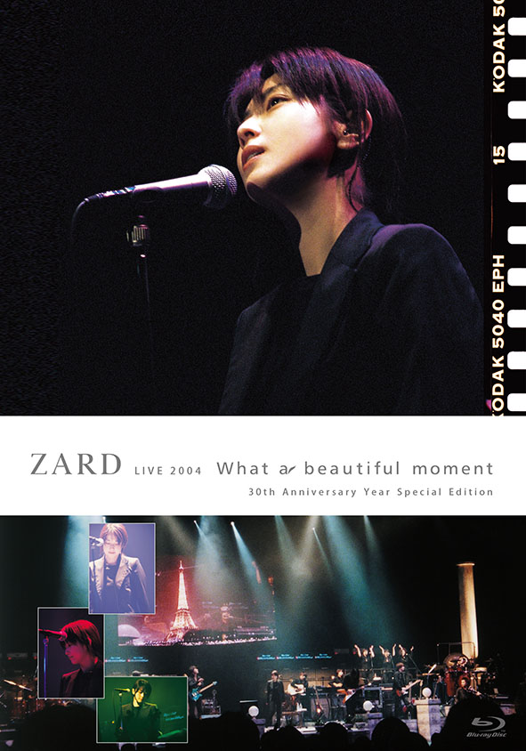
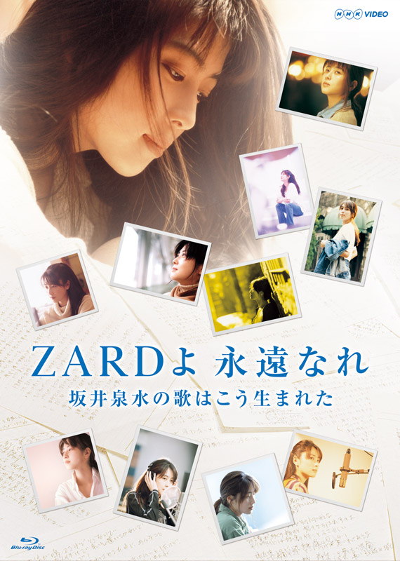
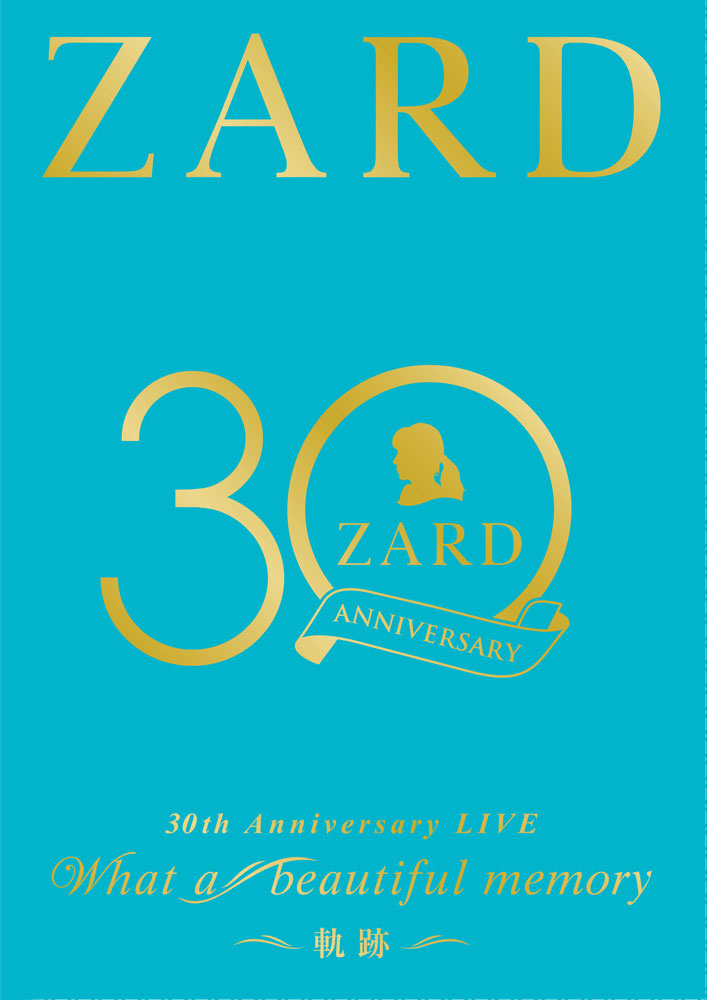

| No. | Title | Content | Format Label – Catalog Number Release Date |
Related |
| Cover | ||||
| First Released | ||||
| ZARD LIVE 2004 “What a beautiful moment” [30th Anniversary Year Special Edition] | Blu-ray JBXJ-5001 2020.10.07 |
WEZARD | ||
 | ||||
| 2020.10.07 | ||||
| ZARD 30th Anniversary NHK BS Premium Bangumi Tokubetsu Henshuuban “ZARD yo Eien Nare: Sakai Izumi no Uta wa Kou Umareta” ZARD 30周年記念 NHK BSプレミアム番組特別編集版『ZARDよ永遠なれ 坂井泉水の歌はこう生まれた』 |
Blu-ray NHK Enterprises / Being – JBXJ-5002 2021.02.10 |
WEZARD | ||
 | ||||
| 2021.02.10 | ||||
| ZARD Streaming LIVE “What a beautiful memory ~30th Anniversary~” | Blu-ray JBXJ-5003～5004 2021.12.15 |
WEZARD | ||
 | ||||
| 2021.12.15 | ||||
| ZARD 30th Anniversary LIVE “What a beautiful memory ~Kiseki~” ZARD 30周年記念ライブ『ZARD 30th Anniversary LIVE “What a beautiful memory ～軌跡～”』 |
Blu-ray JBXJ-5005 2022.10.05 |
WEZARD | ||
 | ||||
| 2022.10.05 | ||||
| ZARD 35th Anniversary LIVE “What a beautiful memory ~forever moment~” | Blu-ray JBXJ-5006～5007 2026.07.08 |
WEZARD / B ZONE | ||
 | ||||
| 2026.07.08 |